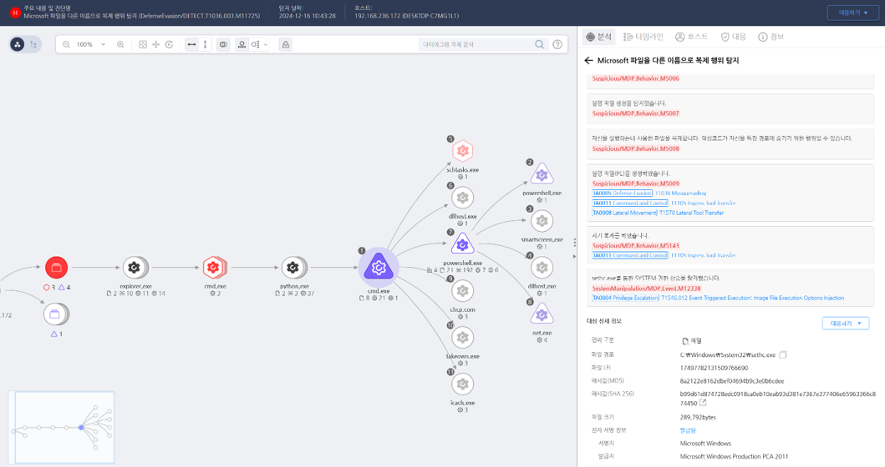

T1546.012.10 sethc.exe를 통한 SYSTEM 권한 상승
D3FEND
MITRE ATT&CK 액션을 기준으로 대응 방안을 작성
Detection
- process_name : "powershell.exe" OR "cmd.exe" AND
- Action : "File-Create" or "File-Modify" AND
- Target2 : "sethc.exe" AND
- Target1 : NOT Same with Target2
Detection(EDR)

Response
- 이벤트 분석
- 시스템 파일(sethc.exe) 변경 로그 확인: 이벤트 ID 4688(새 프로세스 생성) 및 파일 쓰기 활동 이벤트 분석.
- 변경된 sethc.exe가 실행된 시점의 사용자 계정 활동과 명령어 기록을 조사.
- Windows 서비스 변경 활동(예: 디버그 모드 설정 및 원격 액세스 시도) 추적.
- 격리 및 조사
- sethc.exe 파일의 무결성을 확인하고, 원본 파일과 비교하여 변경 여부 분석.
- 악성 sethc.exe 실행 시도와 관련된 프로세스 및 네트워크 연결 추적.
- 공격에 사용된 프로세스의 부모 프로세스와 생성 타임라인 분석.
- 정보 차단
- sethc.exe에 대한 쓰기 권한을 관리자 계정으로 제한하여 비인가 변경을 차단.
- 의심스러운 sethc.exe를 복구하기 위해 Windows 복구 환경(WinRE)에서 정상 파일로 복원.
Mitigations
- 파일 보호 강화
- Windows 파일 보호(WFP) 기능 활성화로 시스템 파일 변경 시 관리자 승인을 요구.
- sethc.exe를 포함한 주요 시스템 파일 경로에서 변경 시도 탐지 및 경고 규칙 설정.
- 권한 제한
- sethc.exe 파일의 소유권을 관리자 계정으로 변경하고, 로컬 사용자 권한 제거.
- DEBUG 권한 비활성화: 일반 사용자 계정이 SYSTEM 권한을 이용하지 못하도록 시스템 권한 설정 제한.
- 모니터링 및 탐지
- sethc.exe 실행 이벤트를 탐지하고, 비정상적인 실행 경로 또는 명령어 활동을 실시간 알림.
- 공격자가 SYSTEM 권한 획득 후 수행하는 후속 작업(예: 계정 생성, 서비스 설치)을 탐지할 수 있는 SIEM 규칙 설정.
- 운영 정책 개선
- 장애인 접근성 기능 실행을 위한 단축키(Shift 5회 누르기)를 비활성화하거나 다른 경로로 실행하도록 구성.
- 시스템 파일 변경 시 반드시 감사 로그를 남기도록 감사 정책 강화.
- 보안 솔루션 활용
- Endpoint Protection 솔루션에서 시스템 파일 무결성 검사를 주기적으로 수행.
- 주요 시스템 파일 변경 시 사전에 정의된 복구 정책을 실행하는 자동 복구 스크립트 배포.
Affected Techniques
Action 실행시 함께 영향을 받는 다른 Techniqes
| D3FEND |
| D3-OSM Operating System Monitoring |
| D3-UBA User Behavior Analysis |